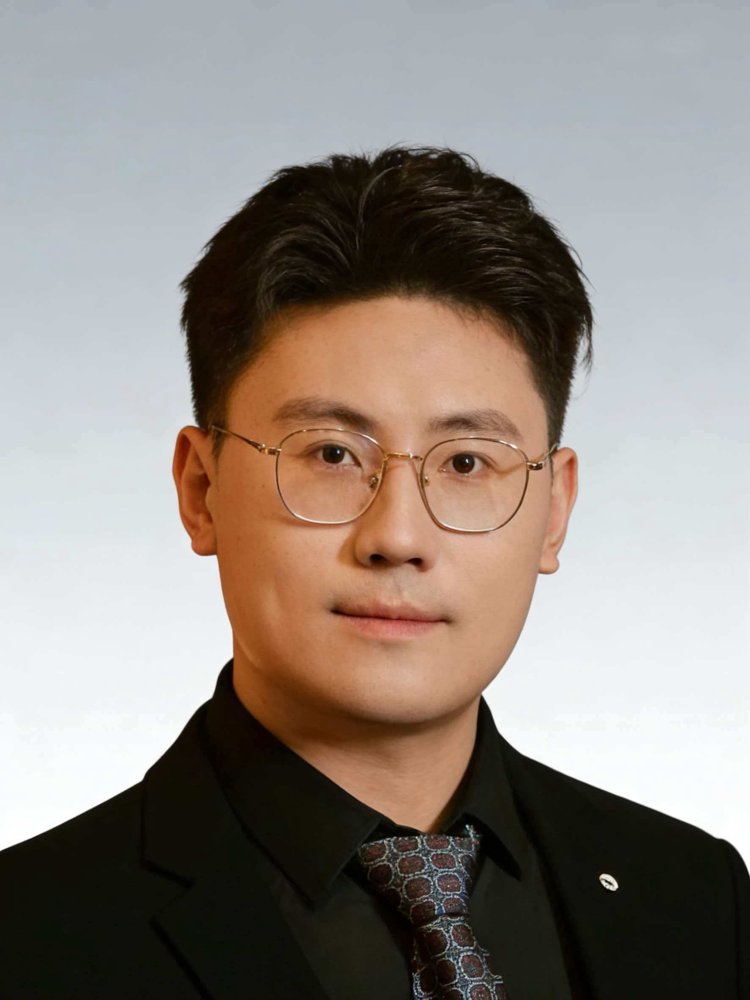

Yonggang Zhang (HKUST)
Home
|  |
Yonggang Zhang
Post-Doctoral Fellow @ HKUST,
Address: Hong Kong University of Science and Technology
Clear Water Bay, Kowloon, Hong Kong
E-mail: zhangyg [at] ust.hk; yonggang9412 [at] gmail.com
[Google Scholar]
[Github]
|
Biography
I am a machine learning researcher with research interests in trustworthy machine learning and reasoning.
My research aims to develop systems that can be effectively and reliably integrated into daily life.
My objectives are threefold: 1) Design theoretical frameworks and algorithms to evaluate and mitigate model vulnerability;
2) Explain reasoning and creativity of large language models; and 3) Develop theories and algorithms to ensure the robustness
of distributed learning frameworks for LLM and co-creation. My long-term goal is to facilitate the integration of AI systems
into daily life, thereby improving social productivity.
I am currently a post-doctoral fellow at Hong Kong University of Science and Technology (HKUST), collaborating with Prof. Yike Guo
(Fellow of IEEE and Royal Academy of Engineering). Previously, I was a post-doctoral fellow at Hong Kong Baptist University (HKBU),
working with Prof. Yiu-ming Cheung (IEEE Fellow) and Dr. Bo Han. I completed my Ph.D. degree at University of Science and Technology
of China (USTC) in June 2022.
Research Interests
My research interests lie in Trustworthy Machine Learning, Adversarial Learning, Federated Learning, and Out-of-Distribution Learning.
Specifically, my current research work centers around three major topics:
Adversarial Learning: Exploiting and harnessing the bugs of deep models. Federated Learning: Enabling collaboration for multiple clients without data exposure. Out-of-Distribution Learning: Endowing deep models with robustness under various environments.
|